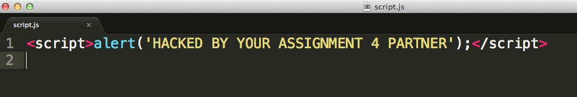
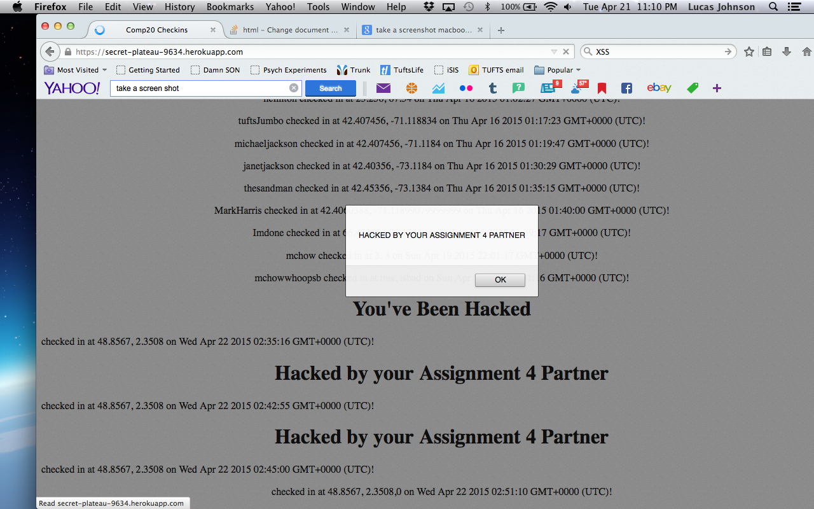
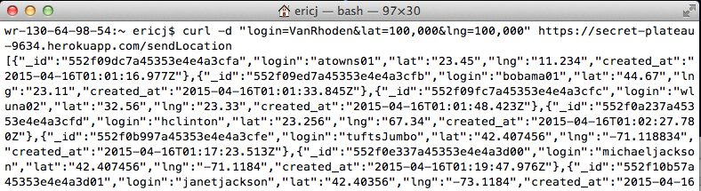
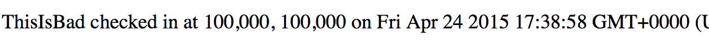
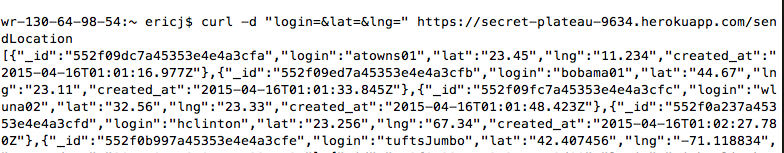
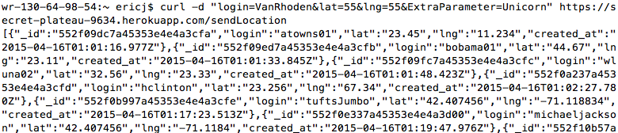
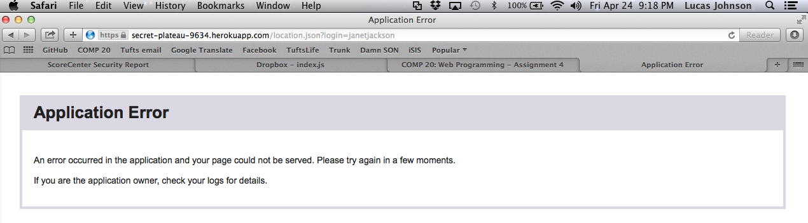

By: Lucas Johnson
This report details the security vulnerablities, of Will Dolan's Assignment 3 server application. The application stores geolocations of those who "check in" on Assignment 2's google map. My job was to systematically find and attack any and all holes in the web server's security, and offer advice on how to cover up those holes.
I first attacked the server using black box techniques. I used the interfaces available to the public to submit bad, harmful, and impossible data to the server's database. Using this technique I uncovered several issues. Next I looked at the source code to identify additional, more subtle, potential problems.
All of the vulnerabilities that I discovered were associated with trusting user input. While such vulnerablities can cause quite a bit of damage, they are rather easy to fix.
- Affects POST API, and GET API (index.html)
- Risk = High
This security issue is easily exploitable and can cause severe problems. A user must simply input a script as one of the paramaters for POST. With this, the possibilities for the index.html page(or any page that displays that script) are endless. The entire page can be taken over.
- I simply injected a script for displaying an alert window.


- Resolution: This issue could be fixed by simply escaping the characters of the input before they are added to the database. Characters like '<' will no longer be viewed as html code and instead will be viewed as a string characters.
- Affects: GET and POST APIs (anything that uses the data)
- Risk = Medium
This security risk does not pose too big a threat when the bad data is simply displayed on an index.hmtl page. However, if this data is actually used by another application, for example Assignment 2, the application will crash.
- I found this issue by successfully posting invalid and even empty latitude and and longitude values.




- Resolution: This issue could be fixed by checking the entered data, and not assuming that the user will input workable values. "Never trust user input." The lat lng values should be checked to ensure that they are within the feasible bounds, and that they are numbers not empty values. For the extra parameters, the server should simply require that only the login, the latitude and the longitude can be submitted.
- Affects: ALL APIs
- Risk = High
This may not be a security risk per se, but it is a huge problem. The server application crashing means that nobody can use your server. This makes hackers very happy. Also, this problem takes 0 work from hackers, or anybody for that matter. Simply searching using the "/location.json?login=" path crashes the application regardless of whether or not the login is valid. So anybody attempting to use this path will crash the server. (I found this problem after I had done a XSS and input bad data, so this could be related.)
- I found this issue by attempting to query a login.

- Then this error was returned when I attempted to POST to the broken server.
- Resolution: This issue is resolved by writing functional code for the "/location.json." path. The issue lies in the fundamentals of the server code.
Overall, these issues have rather large impacts on the usability and functionality of the assignment 3 web server. The vulnerablities in the server are, however, quite trivial and simple to fix if one only takes the time to revisit the server code with security in mind. The /location.json path problem is much more basic. Although it poses a huge issue with the server application's ability to serve data (much like any other attack), it has much less to do with security and much more to do with server side coding fundamentals.